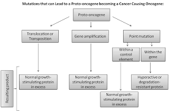
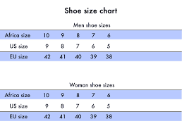

Measuring the evolution of Donald J. Trump's rethoric on TWITTER

Here Is Graph 1
Here we will add the graphical analysis of all trumps tweets about the WALL

Here Is Graph 2
Here is his Tweets abouth the wall compared to his government TIMELINE

Here Is Graph 3
Here is an open space for a WALL-meter (a system that can capture TWEETS in real time